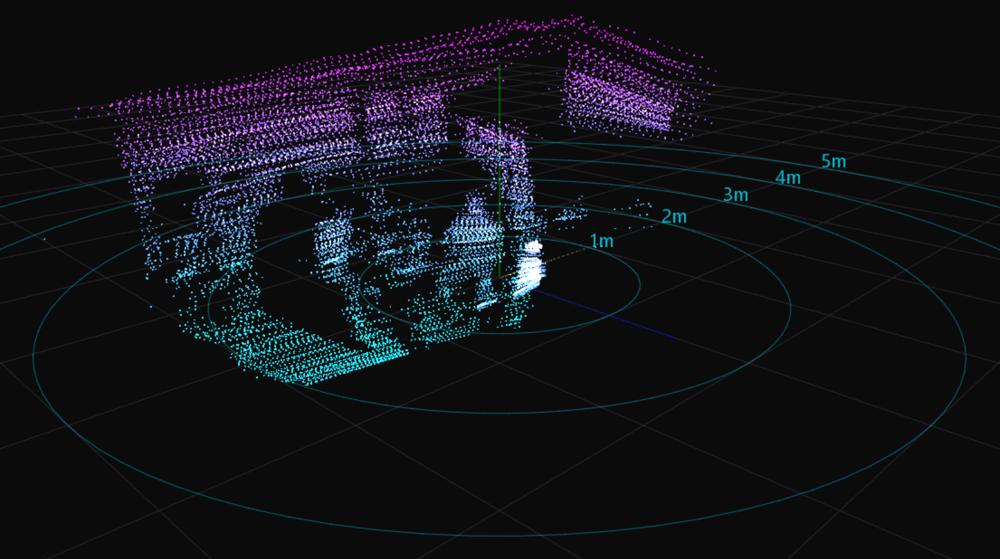
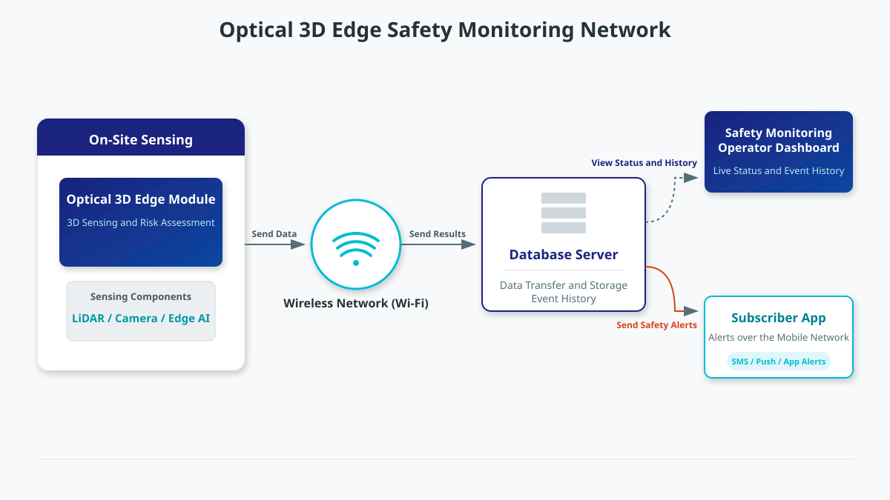

EdgeSynk develops 3D safety monitoring solutions that combine rotating LiDAR, multimodal sensing, and edge AI to detect risks to people, equipment, and facilities in real time.

EdgeSynk provides end-to-end safety monitoring tailored to each site, from sensor hardware to monitoring services.
A multimodal hardware module combines rotating 3D LiDAR and audio sensors. K-NPU edge processing handles data in real time on site.
A live 3D dashboard uses de-identified point cloud data. It logs safety events, tracks multiple objects, and sends intelligent alerts.
We assess each site, plan sensor placement, tune algorithms for local conditions, and provide ongoing maintenance.
Detect falls, wandering, and unusual behavior while protecting privacy in care facilities, hospital rooms, and restrooms where CCTV is difficult to install.
3D monitoring helps cover blind spots and prevent collisions between workers and moving equipment, such as forklifts, in factories, logistics centers, and on construction sites.
+ Potential applications include smart spaces, mobility, and safety in public facilities.
The optical 3D edge module sends measurements and risk assessments over Wi-Fi to a server that logs them and connects to the operator dashboard and subscriber app.

South Korea’s Serious Accidents Punishment Act puts greater emphasis on proactive measures to prevent serious workplace accidents.
As demand for digital care grows, de-identified monitoring can help protect personal privacy while supporting safety.
3D spatial sensing can help address privacy concerns, performance under changing lighting, and the limits of estimating distance from 2D images.
Develop core technology
Improve the solution
Expand into new markets
We welcome proposals for joint R&D, field pilots and proofs of concept, and partnerships.